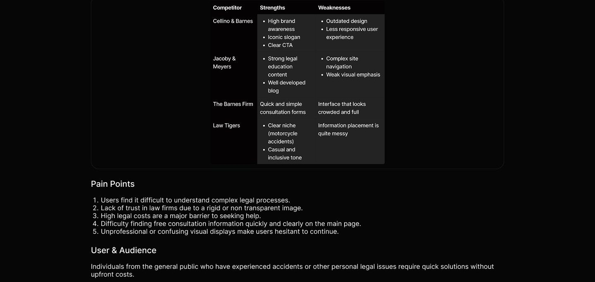
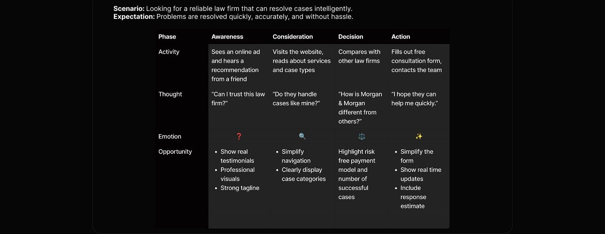
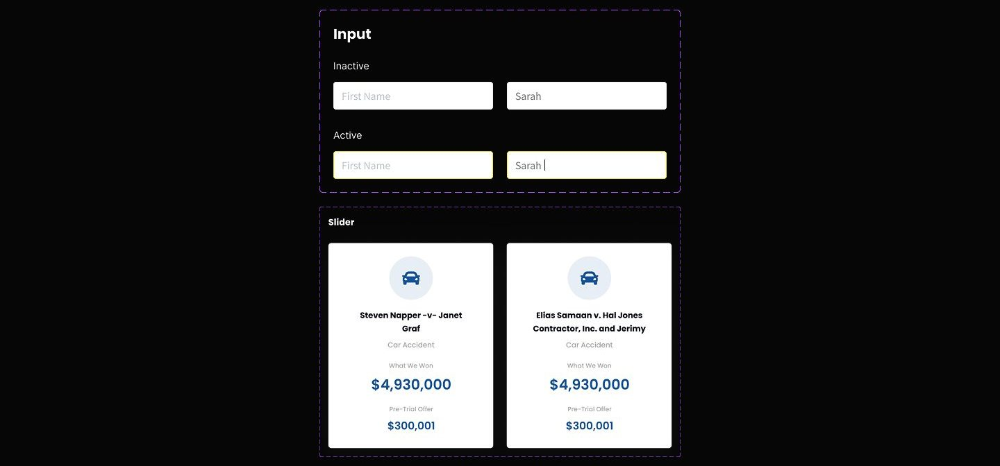
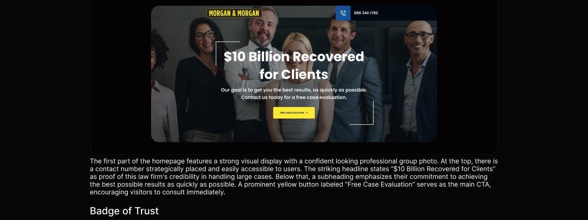
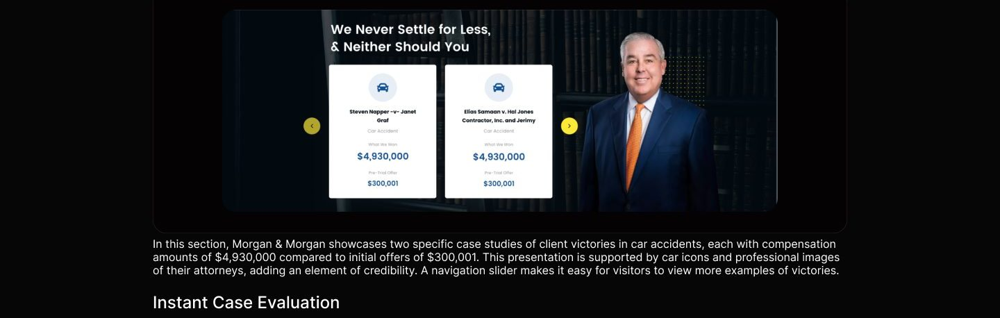
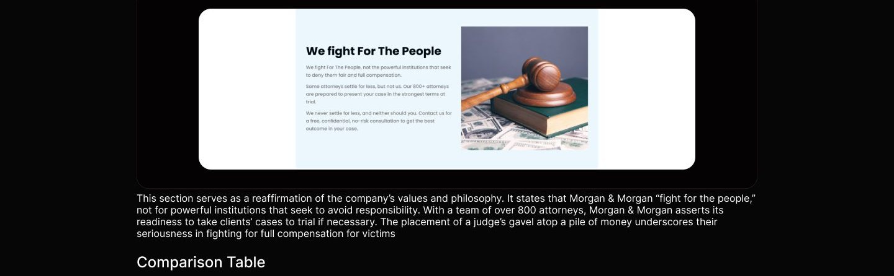
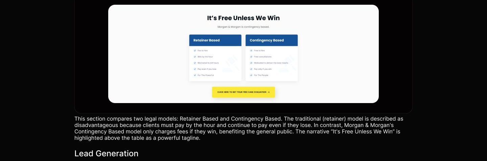
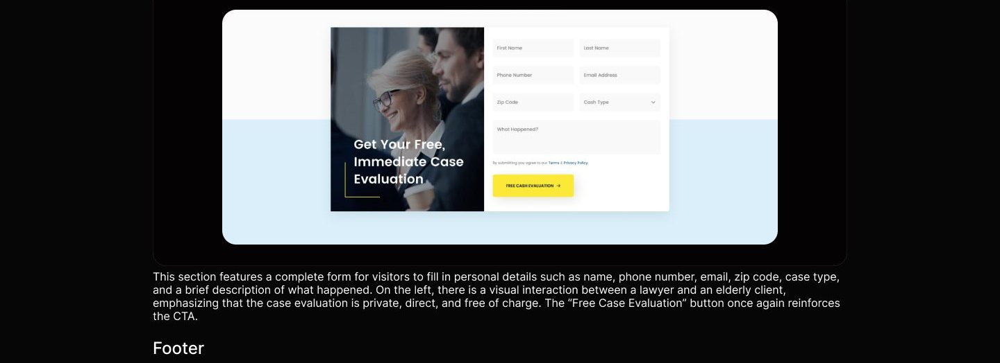

Marketing site
Morgan & Morgan
Justice for You with Strength Against Power

Overview
Morgan & Morgan emphasizes the strength and success of the law firm in fighting for the rights of the general public against powerful parties. With a client centered approach, Morgan & Morgan highlights its success in handling major cases such as car accidents, and showcases its contingency based payment system that eliminates financial risk for clients. Visual communication and copywriting focus on building trust, accessibility, and urgency to act immediately through free consultations.
Problem
- Many people hesitate to seek legal help due to high upfront costs and uncertainty about outcomes.
- Accident or violation victims often don't know if their case is strong enough.
- Many law firms are not transparent about their results and experience.
- Clients often find the legal process confusing and don't know where to start.
Solution
- A "Free Unless We Win" system that only charges fees if they win the case
- Free and fast case evaluation to get a legal assessment in seconds.
- Show real cases & clear compensation values that have been won
- Design a website with simple navigation, clear calls-to-action, and short forms to make the first step easier.
My role
In this project, I served as the UX/Ul Designer responsible for designing the Morgan & Morgan law firm's homepage to be more communicative, convincing, and user friendly. My primary focus was on simplifying the information structure, reinforcing the main message through visual copywriting, and creating an efficient interaction flow, from introducing the firm to filling out the case evaluation form. I also designed components such as case testimonials, cost system comparisons, and strong calls-to-action to enhance conversion rates and user trust in the legal services offered.
Process
The design process for this project was divided into four key phases to ensure a user centered and results experience: 1. Discovery During the discovery phase, a competitor analysis was conducted to understand how other law firms position themselves visually and verbally. In addition, user pain points in accessing legal assistance were identified, and target users and audiences were mapped to ensure that the solutions developed were truly relevant and accessible. 2. Ideation The ideation phase focused on creating a user journey map to visualize the user flow when searching for and accessing Morgan & Morgan's services. This helped the team understand the needs, obstacles, and opportunities for improving the user experience at each point of interaction. 3. Design Process At this phase, a consistent and easy to use design system was developed, including color selection, typography, components, and button styles. The goal is to create a professional, trustworthy, and inclusive look that aligns with the image of the Morgan & Morgan law firm. 4. Usability Testing The usability testing phase includes designing scenarios and tasks that reflect real life situations experienced by users, such as accessing case information or scheduling consultations. This aims to test the effectiveness of the interface and ensure users can complete their tasks easily and quickly.
Discovery
Discover and Understanding In the first phase, the main focus is on understanding the legal market context, particularly in the field of personal injury law such as car accidents. Users seeking legal services are often in stressful situations and require a fast, clear, and risk free process. Therefore, an approach that builds trust from the outset while simplifying access to legal services is essential. A deep understanding of competitors, user needs, and the challenges they face forms the foundation for designing a better experience with Morgan & Morgan.
Competitor Analysis Competitor analysis is conducted to identify visual approaches, communication tone, and the ease of access to services offered by other law firms. By comparing the strengths and weaknesses of competitors, we can design solutions that are superior and aligned with Morgan & Morgan's values, such as community advocacy, ease of access, and a focus on contingency based payment systems. Attention is also given to how these firms build a sense of urgency and trust on their digital platforms.

Ideation
The ideation phase focuses on exploring how users interact with legal services, especially when they are in urgent or stressful situations. By understanding the emotional context and logic behind users' actions, we can design a more responsive and intuitive experience. The main focus is to map out the user journey from the initial stage of recognizing the need for legal assistance to finally scheduling a consultation with Morgan & Morgan.
User Journey
A user journey map helps visualize every step users take when seeking legal services, including their activities, thoughts, and emotions at each phase. This allows us to identify friction points and opportunities to improve the overall experience. This journey is divided into four main phases: Awareness, Consideration, Decision, and Action.

Design system
This phase focuses on designing consistent and recognizable visual elements. From color selection and typography to components such as buttons and forms, everything is designed to build trust, professionalism, and accessibility. The design system serves as the visual foundation to ensure a consistent and cohesive user experience across all Morgan & Morgan platforms.
Design System
Secondary colors
Neutral colors
Neutral 700 Neutral 600 Neutral 500 Neutral 400 Neutral 300 Neutral 200 Neutral 100 Neutral 50 #303133 #181818 #333333 #606266 #B3B383 #CCCeCC #FFFFFF
Typography
Poppins ABCDEFGHIJKLMNOPQRSTUVWXYZ abcdefghijklmnopqrstuvwxyz 1234567890
Style Font size/weight
88/Bold Heading 54/Bold Title 1
54/Semi Bold Title 1
54/Medium Title 1
54/Regular Title 1 44/Bold Title 2
44/Regular Title 2
Grid System
Desktop (1920px)
375px 30px 30px
1770px
1920px


Super Viral Advocate Lawyers
This section reinforces visitor confidence by displaying logos from professional associations and awards the firm has received, such as AV Preeminent, Best Lawyers, Super Lawyers, and the American Board of Trial Advocates. The placement of these badges implies that Morgan & Morgan has been recognized by renowned legal institutions, adding legitimacy to their reputation.
Results Case

Find Out If You Have A Case In Seconds, for Free. Speak with our representative to determine if you
In this section, visitors are encouraged to immediately check if they have a case they can claim. With the text reading "Find Out If You Have A Case In Seconds, for Free," this section emphasizes the urgency and ease of starting a consultation. Accompanied by an image of the legal team discussing a case and an illustration of the scales of justice, there is also a yellow CTA button "Click Here to Call" that accelerates the conversion process.
Brand Philosophy



At the very bottom, the footer includes the Morgan & Morgan logo and a statement that the site is designed to be accessible to users with disabilities. It also includes the address of the main office in Orlando, Florida, and links to the Privacy Policy, Terms of Service, and Contact Us pages. This minimalist footer concludes the page in a professional and informative manner.
Usability testing
To evaluate the overall usability, effectiveness, and user satisfaction of the Morgan & Morgan law firm homepage, I conducted a series of moderated usability testing sessions with participants representing first time visitors who were actively seeking legal assistance. Each session was built around realistic, goal driven scenarios to simulate how users naturally approach discovering and engaging with a legal service provider. Participants were given the following scenario to complete: 1. You are currently facing a problem and need assistance from a law firm. You've received a recommendation that Morgan & Morgan is the right law firm to help resolve your issue. What would you do to learn more about the firm? 2. You're still feeling uncertain and need more information before making a decision. What can you do to find additional details from the law firm? 3. You would like to schedule a consultation with the legal team. How would you go about doing that? These tasks were designed to test how effectively the homepage communicates the firm's credibility, the clarity of available information, and the ease of taking further steps, such as scheduling a free consultation or contacting the team directly. The testing focused on how users navigated sections related to past case victories, the firm's commitment to "Free Unless We Win," and the functionality of the contact forms and CTA buttons.
Reflection
If I had additional time, I would conduct further usability testing with more structured and diverse user scenarios, particularly focusing on different legal service needs.